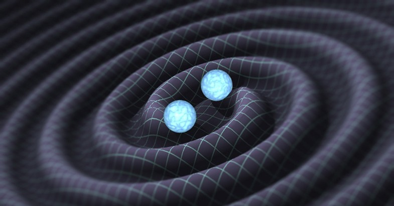

by Anthony
Postado em 1 de Janeiro, de 2019 às 12:00
"Na quinta-feira 11/02/2016, a Física como conhecemos pode ter mudado radicalmente — e a comunidade científica não poderia estar mais feliz com isso. Depois de décadas trabalhando apenas com teorias e hipóteses, cientistas conseguiram comprovar a existência de ondas gravitacionais, confirmando algo que Albert Einstein havia postulado há quase um século. E o reflexo dessa descoberta pode mudar a forma como entendemos o universo, além de abrir uma série de outras possibilidades até então inimagináveis.
No entanto, antes de qualquer coisa, é preciso entender o que são essas tais ondas gravitacionais. Segundo a Teoria Geral da Relatividade de Einstein, essas ondas são emitidas por todos os corpos em movimento e são capazes de perturbar o espaço ao seu redor. São como feixes de energia que distorcem o tecido do espaço-tempo, ou seja, algo bem parecido com o que já vimos em séries de ficção-científica como Doctor Who.
O problema é que ninguém havia conseguido provar a existência dessas ondas até então, o que fazia delas apenas uma teoria dentro do conceito apresentado por Einstein. Segundo ele, todo corpo do Universo emitia essa onda — inclusive você —, mas em níveis tão pequenos que era impossível percebê-las. Para o cientista, apenas algo com grandes massas e com uma forte aceleração seria capaz de fazer essa onda gravitacional aparecer em um nível razoável.
Como o Mashbale relembra, entender mais sobre essas ondas pode nos dar o caminho para manipular o espaço-tempo de alguma forma — ainda que não seja a garantia de uma viagem temporal, por exemplo. O próprio cofundador do LIGO, Kip Thorne, diz duvidar que isso vai nos conduzir a uma era em que essas viagens serão possíveis, muito embora quisesse que isso acontecesse. Por outro lado, as implicações da descoberta podem trazer grandes avanços em outras áreas.